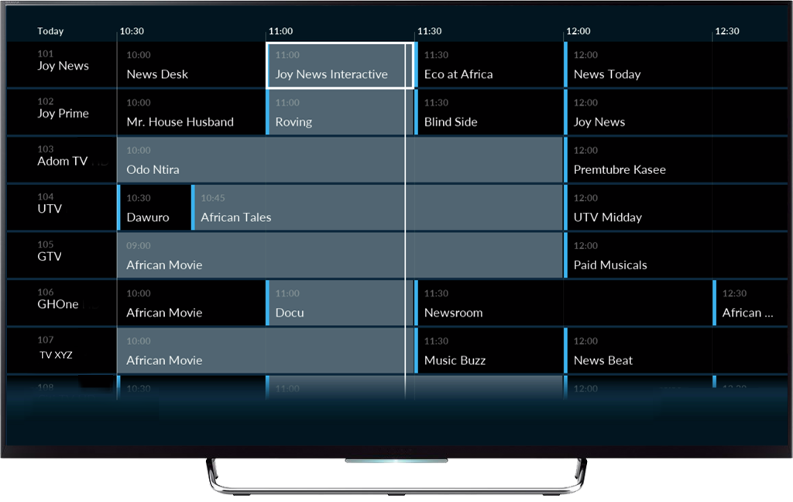

In today's fast-evolving media landscape, satellite broadcast services are vital for delivering
high-quality content to audiences worldwide.
Our company provides a fully managed Direct-to-Home (DTH) headend infrastructure, ensuring seamless
content distribution across West and Central African markets.
Our end-to-end solution covers everything from satellite uplink and downlink to encoding and
multiplexing, guaranteeing superior transmission quality.
The broadcasting process begins with content contribution through various means such as IP, microwave,
or fiber. The received signal then undergoes essential processing, including re-encoding, multiplexing
(MUX), modulation, and encryption, along with additional DVB services like content management and
playout. Once prepared, the signal is uplinked to the ASTRA 2F satellite for wide-area distribution.
Finally, the transmitted signal reaches DTH households, ensuring seamless content delivery to viewers.

Designed to support a diverse range of programming—including live events, news, sports, and
entertainment our advanced DTH headend infrastructure offers unmatched reliability and efficiency.
Backed by a state-of-the-art facility and a team of skilled engineers and technicians, we provide
broadcasters and content providers with a cost-effective and scalable media distribution solution.
Beyond content distribution, we also offer remote playout service and Media Asset Management System.
Free-To-Air Electronic Programme Guide
Our complimentary Electronic Programme Guide (EPG) for Free-to-Air (FTA) broadcasting plays a vital role
in enhancing your channel’s visibility, improving audience engagement, and increasing advertiser
interest. EPGs serve as digital on-screen guides that provide viewers with program schedules,
descriptions, and other key details, making it easier for them to discover and navigate content.
A well-structured EPG enhances viewer engagement by making content easily discoverable, giving your FTA
channel a competitive edge. It also increases advertiser confidence by providing clear audience metrics,
making the channel more attractive, accessible, and commercially viable for long-term success.

Free-To-Air Logical Channel Numbering System
Our complimentary Free-To-Air (FTA) Logical Channel Numbering (LCN) system enhances viewer experience by organizing channels in a clear, structured manner, making it easier for audiences to find and access their favorite content. By assigning logical numbers to different types of channels, such as news, entertainment, and sports, LCN simplifies navigation and ensures consistency across different platforms and devices. This improves audience retention and engagement, as viewers are less likely to switch away due to frustration from disorganized channel listings.